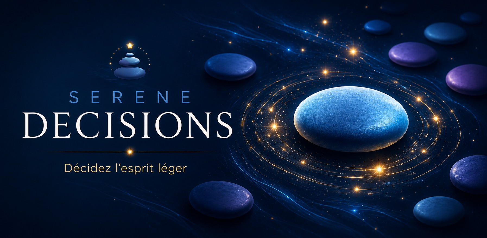

Préparez
Écrivez vos options, partez d’un modèle prêt à l’emploi ou importez une grande liste.

Le choix simple
The simple choice
Quand tout vous convient, Serene tranche.
When every option works, Serene makes the call.
Une décision en moins
Préparez une liste ou choisissez un modèle. Serene Decisions effectue un tirage honnête, puis laisse sa constellation révéler le résultat avec calme.
Trois gestes
Écrivez vos options, partez d’un modèle prêt à l’emploi ou importez une grande liste.
Choisissez un tirage uniforme ou pondéré, avec un ou plusieurs résultats.
Le résultat est déjà calculé. La constellation ne fait que le révéler.
La confiance, sans astérisque
Chaque option conserve la probabilité affichée. L’effet visuel révèle le choix, il ne l’influence jamais.
Aucun compte, aucun serveur : listes, brouillon et historique facultatif restent sur votre appareil.
Pas de publicité, pas de profilage et pas de mécanisme conçu pour vous retenir.
Vous pouvez tirer immédiatement. Les réglages avancés restent disponibles sans encombrer le premier geste.
Simple ne veut pas dire limité
Pondération, plusieurs résultats, grandes listes, sauvegarde automatique et accessibilité sont là au bon moment — jamais avant.
Serene Decisions
One less decision
Build a list or choose a ready-made template. Serene Decisions makes an honest draw, then lets its constellation reveal the result calmly.
Three gestures
Write your options, start from a ready-made template or import a large list.
Choose an even or weighted draw, with one result or several.
The result is already calculated. The constellation simply reveals it.
Trust, without an asterisk
Every option keeps the probability shown. The visual effect reveals the choice; it never influences it.
No account and no server: lists, drafts and optional history stay on your device.
No advertising, no profiling and no mechanism designed to keep you hooked.
You can draw immediately. Advanced controls remain available without crowding the first gesture.
Simple does not mean limited
Weighting, multiple results, large lists, automatic saving and accessibility are there at the right time — never before.